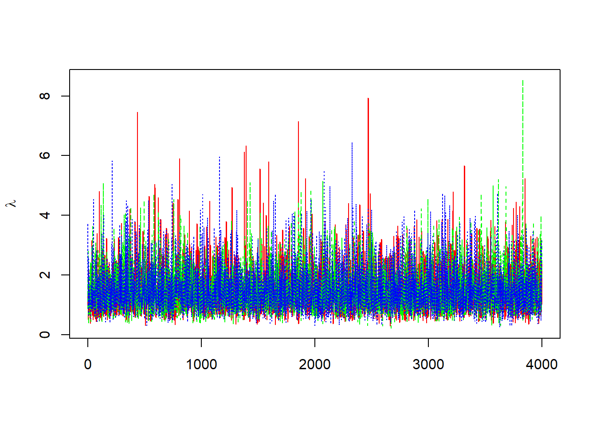
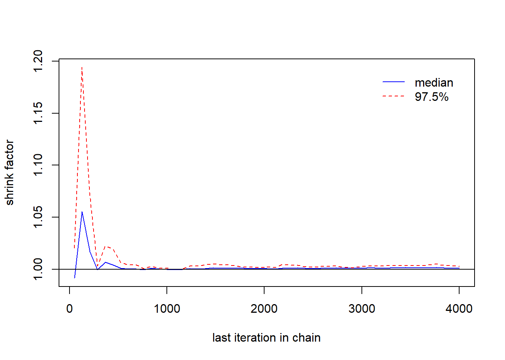
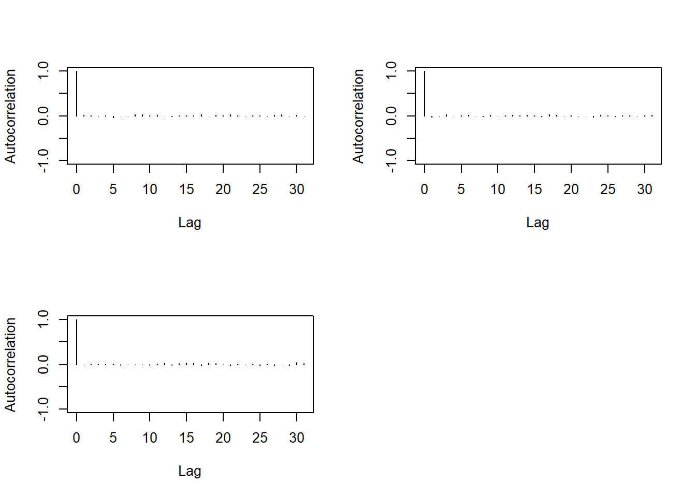

Cette base de données représente l’oppointment l’offre et la demande d’emploi en Tunisie source des données est l’INS notre problématique est d’expliquer l’oppointment en fonction de l’offre est la demande d’emploi en utilisant une régression linéaire ##Data
> demande=c(15120,27678,22051,21825,24178,20235,20715,21388,32945,28969,23112,20035,18272,26413,21046,23525,22511,19701,23422,19931,31411,28365,24919,18298,28693,27450,24230,31041,33156,24425,26963,25670,33719,33587,26660,19233,43393,30396,27413,30630,28275,24659,27287,25023,33371,33729,21740,21666,33538,22716,30785,28952,28029,26636,33462,29307,35773,25759,6696,34928,35841,28364,32955,35238,31655,30284,33787,28066,41875,34620,22595,37482,37403,35319,42254,39864,37882,34543,40862,31733,44114,38268,36325,36787,33370,43951,44665,36978,38484,39503,37580,39885,38286,39399,42901,40407,37243,44815,41669,37703,58072,35863,41136,43627,52151,33804,46982,33961,46656,46237,39280,40585,39251,35894,42435,41157,63473,48337,45863,32915,52179,45870,37151,42744,41894,40653,42268,46001,42377,86175,45264,37782,59475,43628,34014,42957,40913,39961,47698,50493,45504,69241,36503,43492,54355,49074,51479,48898,43949,40448,47888,44490,65315,62363,42753,53315,74390,73160,125205,75062,67048,54968,31239,47059,77413,55893,46706,56632,63416,47361,102350,72984,65123,44130,57122,96859,87052,66710,92279,69358,67937,52340,72372,60758,58721,47232,47569,52319,82683,63178,73339,57485,70231,59443,63929,54667,51379,42532,36660,59265,75610,64413,54115,59725,71411,57417,54491,62469,39477,42033,52543,64816,65818,74222,58516,58463,93628,71499,61436,71382,46671,32896,49226,63553,84881,91686,60239,62830,70040,56077,81811,48008,40921,35634,51833,45712,65561,64686,52502,44758)
> offre=c(5936,7866,7128,7234,7747,7838,5630,5757,8160,7997,7266,7361,7006,7708,7210,8280,8157,8587,7379,6091,7103,7538,7182,7404,7925,8906,9800,9425,8972,9156,6134,6391,6791,8211,6301,5523,9062,9926,9587,10094,10500,9335,7854,7431,11240,8118,6210,5646,8146,8542,10218,9402,10143,9362,8695,9186,9305,9667,6943,6123,9126,9158,12132,12868,12299,11225,11723,9203,13240,10492,7308,8546,15635,12721,13920,15687,12457,11202,12238,9474,13275,10847,9975,8230,13143,11612,12391,12342,14064,14342,9896,11255,13213,9924,8602,9829,13303,12565,13251,11331,12822,12661,11109,10566,12126,10709,8790,9105,14168,13336,12924,12435,14076,12288,9591,11439,9358,13794,9881,8752,16351,14119,12295,13766,12510,12104,12548,13720,9916,10229,10978,8930,12050,11397,10645,15363,17829,14362,14048,12153,13200,13099,11690,14057,15895,14656,16513,15711,16381,15507,15268,12612,13609,14268,12304,13472,9302,7457,7224,9270,8913,9662,6448,6981,10672,9117,7766,7262,7863,9536,9168,9635,9660,9600,7262,7819,10589,9923,8120,7146,8194,8531,8339,10534,9696,8043,5479,5372,9003,7652,7158,5709,7263,8064,8667,10547,10774,8265,6217,6676,10264,9075,8085,6589,6748,7730,7290,6511,7337,5999,5407,5314,7267,6893,7276,5165,5897,7539,6846,7968,7803,6394,4294,6732,7035,7262,7303,5998,7097,6969,8440,6568,7543,7003,5568,6616,8337,8514,7689,5752)
> oppointment=c(5567,6663,6475,6775,6920,6352,5620,4998,5853,6699,6733,7870,6353,7043,6996,7099,7375,7128,6465,5738,6214,6274,6347,6754,6876,7111,7643,8205,7898,6135,5697,4746,5283,6322,5494,4645,6496,7040,7679,8154,7799,7434,7169,5788,6373,7596,6422,5640,6453,6254,7717,8428,8923,8366,7390,7576,6628,7008,6703,5731,8011,8143,10007,10401,10281,10293,9968,8027,8642,9208,7157,6711,14193,11230,10377,13638,11207,10100,9517,7714,8144,8462,7592,6928,10629,10885,9852,10647,10985,12810,8737,9614,8464,9253,8288,8790,11047,10652,10268,10525,10902,8421,8998,8459,9313,7720,8842,9039,12060,11461,10566,11124,11924,10866,8481,8955,9125,9777,10693,9540,14350,12692,11194,11366,12100,11776,10805,11092,10209,9495,10883,8262,11959,10126,8567,13254,12582,11730,10827,10508,10167,9316,9435,12932,11881,10686,10436,10385,10920,10690,10172,10706,9810,9122,8598,10213,4096,3105,2874,4099,4711,4963,2970,2918,4711,4676,4285,3063,3514,4465,4762,5221,4664,4512,3423,3946,4328,5815,4805,4095,4834,5887,4947,6214,6282,5029,3991,2980,5019,4910,4400,3672,3871,4835,4501,7289,6851,5357,4177,3701,6332,5204,4907,4459,4938,5146,5069,4872,4282,4628,3961,3375,4832,4958,5225,4088,4015,4280,4339,4996,4864,3623,2847,4108,4642,3983,4233,3550,4130,4208,5179,3283,4098,3328,2887,3933,4513,4897,5080,4413)
> data_work=data.frame(demande, offre,oppointment)
> list=list(demande = demande,
+ offre= offre,
+ oppointment=oppointment, K = 240)model
{
alpha ~ dnorm(0,5)
beta1 ~ dnorm(0,5)
beta2 ~ dnorm(0,5)
sigma ~ dunif(0,100)
tau <- 1/(sigma*sigma)
# likelihood
for(i in 1:K)
{
oppointment[i] ~ dnorm(mu[i], tau)
mu[i] <- alpha + beta1*offre[i] + beta2*demande[i]
}
}> library(R2OpenBUGS)## Warning: package 'R2OpenBUGS' was built under R version 3.4.4> library(coda)## Warning: package 'coda' was built under R version 3.4.4sink("mod.txt")
cat("
model
{
alpha ~ dnorm(0,5)
beta1 ~ dnorm(0,5)
beta2 ~ dnorm(0,5)
sigma ~ dunif(0,100)
tau <- 1/(sigma*sigma)
# likelihood
for(i in 1:K)
{
oppointment[i] ~ dnorm(mu[i], tau)
mu[i] <- alpha + beta1*offre[i] + beta2*demande[i]
}
}
",fill=T)##
## model
##
## {
## alpha ~ dnorm(0,5)
## beta1 ~ dnorm(0,5)
## beta2 ~ dnorm(0,5)
## sigma ~ dunif(0,100)
##
## tau <- 1/(sigma*sigma)
##
## # likelihood
## for(i in 1:K)
## {
## oppointment[i] ~ dnorm(mu[i], tau)
## mu[i] <- alpha + beta1*offre[i] + beta2*demande[i]
## }
## }
## sink()
filename0<-"mod.txt"
list=list(demande = demande,
offre= offre,
oppointment=oppointment, K = 240)> inits<-function(){
+ inits1=list(alpha=0,beta1=0,beta2=0 )
+
+ inits2=list(alpha=1,beta1=1,beta2=1)
+ }params<-c("alpha","beta1","beta2")library(R2OpenBUGS)
out1<-bugs(list,inits,params,filename0,codaPkg=F,n.burnin = 3000,
n.thin =1, n.iter=7000,debug=T,
n.chains = 3,working.directory=getwd())load("out1.RData")
library(coda)
b=mcmc(out1$sims.array[,,1])
lambda=exp(b)
matplot(lambda,col=c("red","green","blue"),ylab=expression(lambda),type="l")
> gelman.plot(list(b[,1],b[,2],b[,3]))
> n<-nrow(b)
> cor(b[-n,1],b[-1,1])## [1] 0.01350178> cor(b[-c(n:(n-1)),1],b[-c(1,2),1])## [1] 0.004938442> autocorr.plot(b)
> geweke.diag(b)##
## Fraction in 1st window = 0.1
## Fraction in 2nd window = 0.5
##
## var1 var2 var3
## -4.4922 1.3785 0.6411> gelman.diag(list(b[,1],b[,2],b[,3]))## Potential scale reduction factors:
##
## Point est. Upper C.I.
## [1,] 1 1